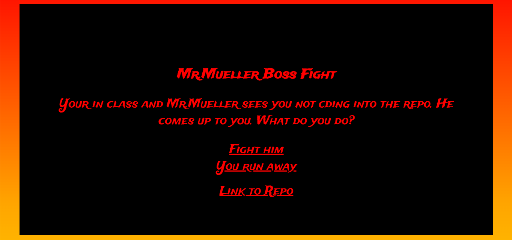

Choose Your Own Adventure Project
Context
In SEP, we were assigned to choose a Choose Your Own Adventure Topic to make a Project about using our ammased knowledge of Git, Github, and Markdown. My group of 3 people including me chose to make a Choose Your Own Adventure Project about a boss fight with Mr Mueller. Since our group felt we were comfortable with going above and beyond, we chose to do the extra credit which meant doing the entire project in HTML instead of markdown on our IDE's.
Content
We started the project off with a Google Drawing on what direction oru project was going to go. We drew what choices the player could make in choosing their own adventure in a Mr Mueller Boss Fight and how they can lose and win to Mr Mueller, the Boss. After making our plan, we moved onto the IDE. In the IDE, we started off by making all of the HTML files, with the most important one being the home.html where your initial choices would be made that would decide the direction of your adventure, as well as a link to our Repository where all our work would go after we pushed it onto Github. In the Choose Your own Adventure, the Boss Fight starts off with Mr Mueller seeing we did not CD into the Repository, which makes him come up to the player. As aforementioned, you are met with 2 initial choices. These choices include Running Away from Mr. Mueller, or fighting him. Those initial choices you make decide the direction of your adventure and what you will see, with content including swords you can use, a rubber ducky secret weapon, and more in effort to defeat Mr Mueller, the Boss.
Reflection
When working on the Choose Your Own Adventure Project in our IDEs, we repeatedely ran into problems that came from miscommunication and procastination. To get the full version of the project and our partners edits, we had to constantly use the git pull command to pull their work and edits into view. When me or my partners did not say they were pushing, it pushed us back when we had to git pull or open the Merge Menu whenever we pushed due to lack of communication.
As a takeaway, I feel like our group work effort could have benefited a lot from much greater use of communication skills, since it led to a lot of setbacks and lost us valuable time while working on the project. Furthermore, since I was sick, I was not able to work a lot on our project plan, which I would have wanted to contribute to a lot more than I have by adding stuff that I would have want to put in our project. If I could go back, I would definitely focus on the aforementioned a lot more, as it would have advanced our project to a level beyond our finished product.
For my next steps in SEP 10, I look forward to learning more about coding languages including HTML and using Github and Bash, as well as making better projects using what I took away from my work in the project, and how I can improve by being more communicative, a harder worker, and stay strong at the hardest of challenges.
Project Repository